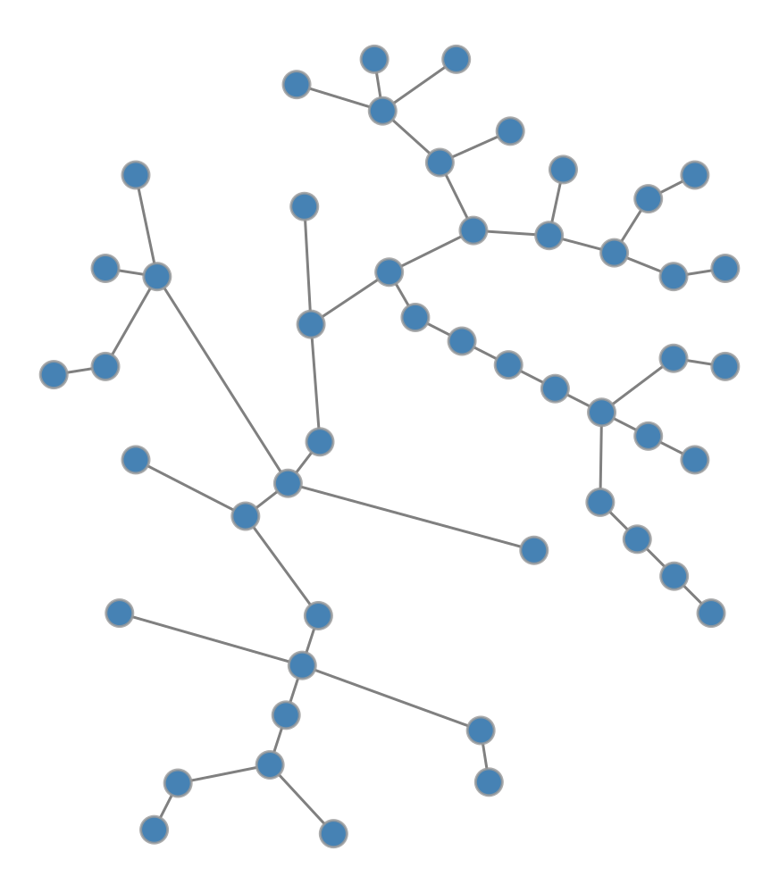
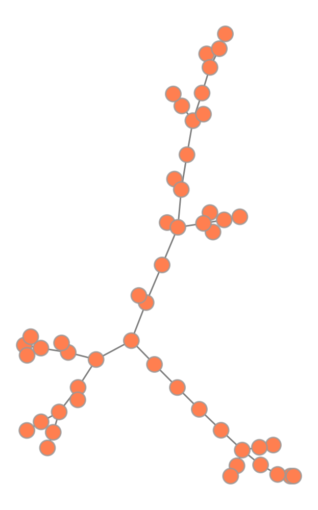
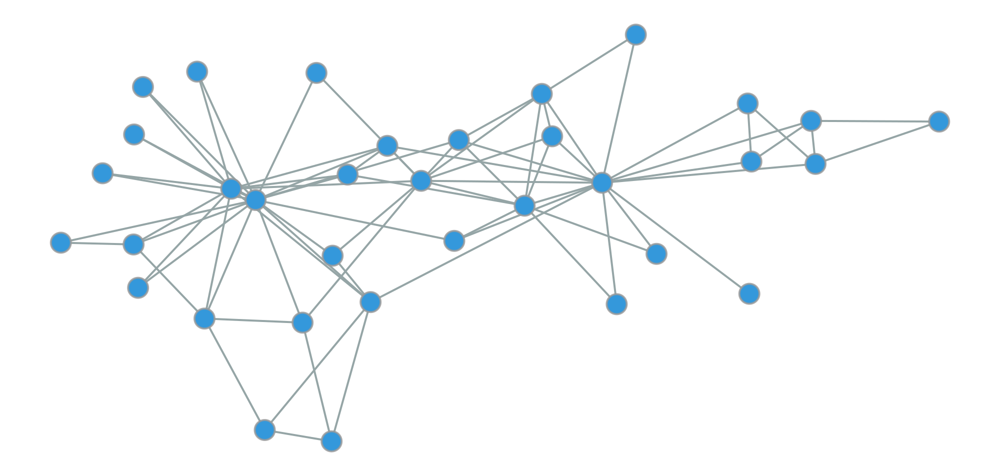
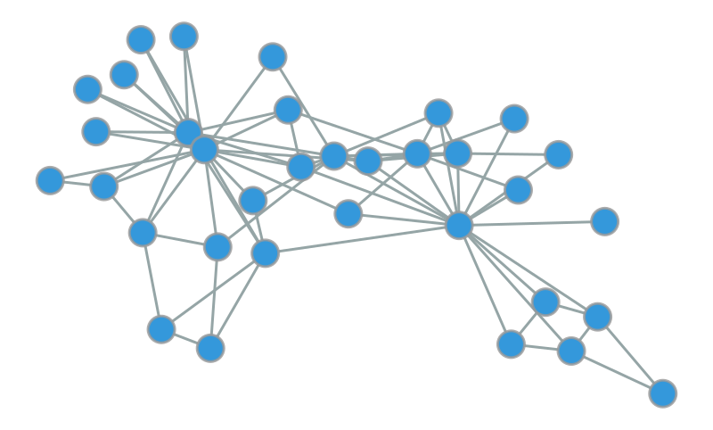
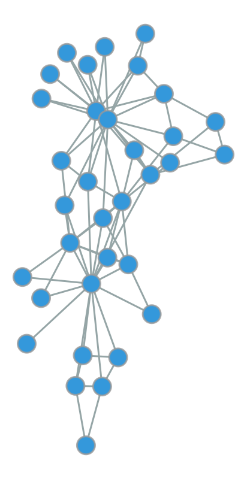
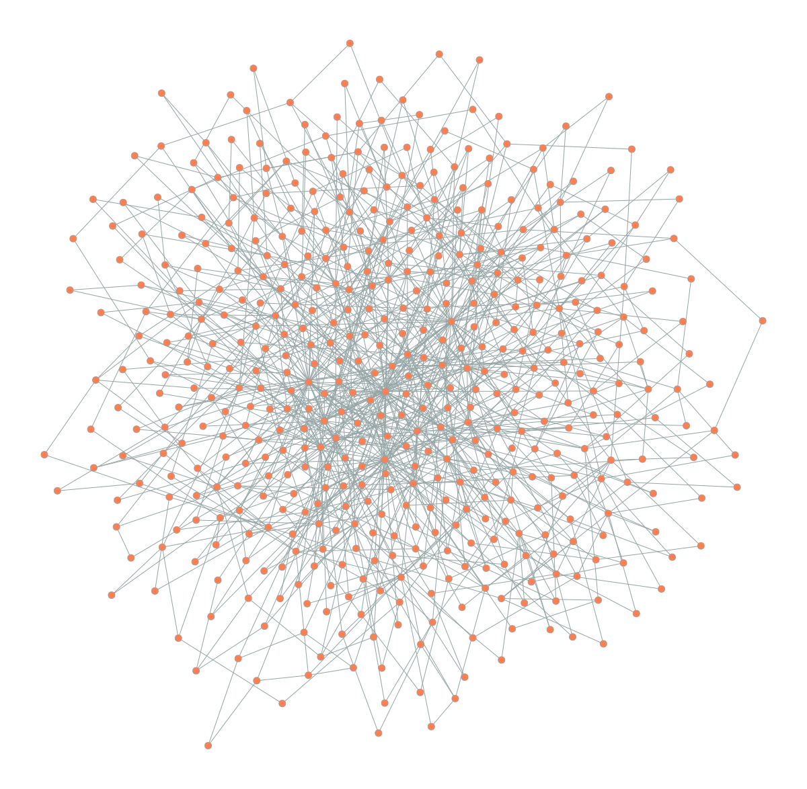
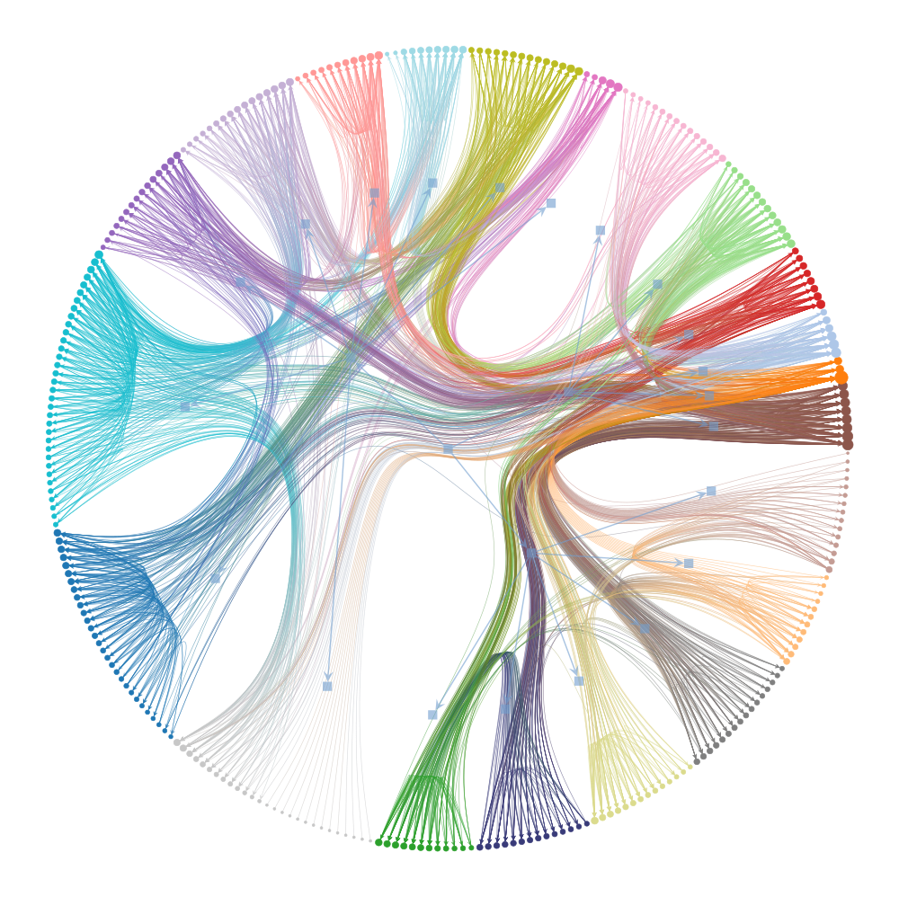
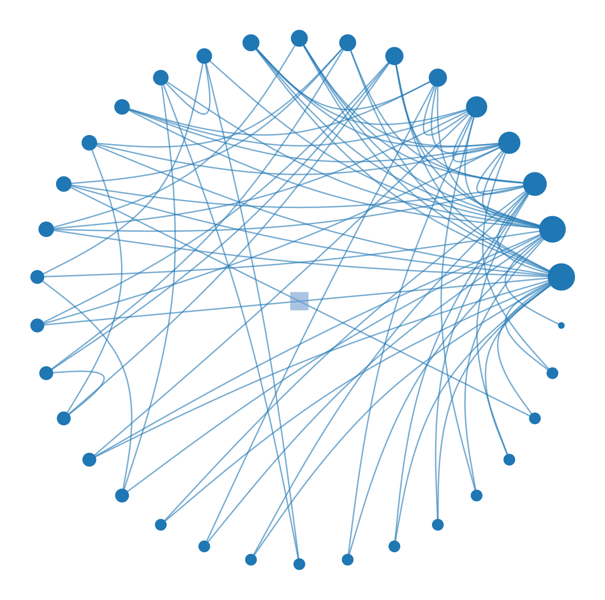
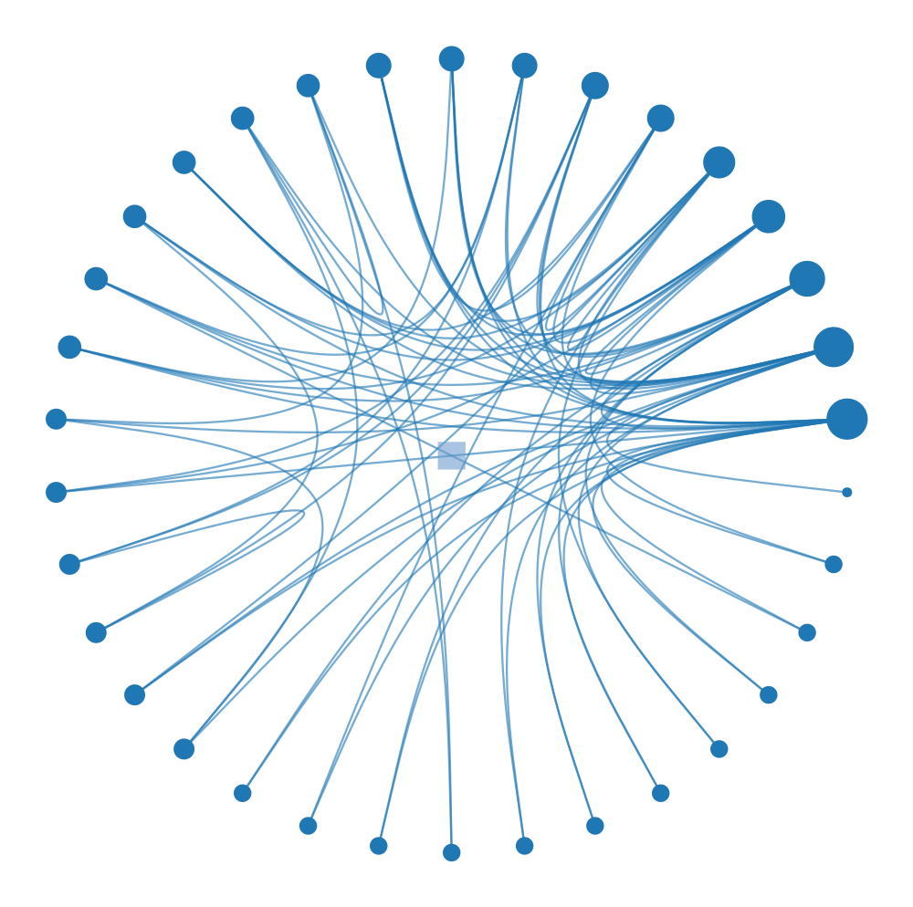

This module introduces the art of network visualization.
You’ll learn:
How to choose layout algorithms that reveal rather than obscure network structure.
The principles of force-directed layouts (Fruchterman-Reingold and SFDP) and when to use each.
How to visualize hierarchical community structure using nested block models and edge bundling.
The tradeoffs between layout approaches and how to match algorithms to your analytical goals.
The Art of Structure
Have you ever looked at a network visualization that resembles a tangled ball of yarn? Nodes cluster in impenetrable clumps. Edges cross everywhere. These “hairball diagrams” are so common in publications that they have become a running joke in network science.
The problem isn’t that networks are inherently messy. The problem is that the layout fails to reveal the structure that is actually there. A bad layout obscures answers, no matter how much you adjust colors or node sizes.
What is the goal of network visualization? It is not to make pretty pictures. It is to make structure visible. A good layout answers your questions before you even ask them. It shows you if there are communities, if there is a hierarchy, or if certain nodes act as central hubs.
Let’s talk about how to choose and use network layouts that reveal rather than obscure. We will start with the simplest case of trees, move to general networks with force-directed layouts, and finally explore hierarchical structures that combine both approaches with edge bundling.
The core principle is simple. Layout is not decoration. It is a hypothesis about what structure matters in your network.
The Challenge of Position
A network, or graph, is a collection of nodes connected by links. These can represent social relationships, neural connections, or citations between papers. Formally, a network G = (V, E) consists of a set of nodes V = \{v_1, v_2, ..., v_n\} and a set of edges E \subseteq V \times V. Edges can be directed (like citations) or undirected (like friendships).
Here’s the challenge. Unlike data points that have inherent positions like latitude and longitude or time stamps, networks have no natural layout. The positions you see in a visualization are entirely constructed by the placement algorithm.
Why visualize networks at all? Because topology is hard to grasp from data alone. Looking at an adjacency matrix gives you facts, but it rarely gives you insight. Visualization transforms abstract connectivity into spatial patterns your visual system can process.
Choosing a layout is choosing what to emphasize. Different algorithms can make the same network look completely different. We must choose wisely.
Visualizing Trees
The simplest networks are trees. These are connected networks with no cycles, where every node except the root has exactly one parent. Trees appear everywhere in biological taxonomies, organizational charts, and file systems.
For trees, the structure is clear and the hierarchy is paramount. The radial tree layout makes this hierarchy visible by placing the root at the center and arranging descendants in concentric circles.
Code
import graph_tool.allas gtimport networkx as nximport numpy as npimport matplotlib.pyplot as plt# Set random seed for reproducibilitynp.random.seed(42)# Generate a random tree using NetworkXnx_tree = nx.random_labeled_tree(n=50, seed=42)# Convert to graph-toolg = gt.Graph(directed=False)g.add_vertex(nx_tree.number_of_nodes())for u, v in nx_tree.edges(): g.add_edge(g.vertex(u), g.vertex(v))# Create radial tree layoutpos = gt.radial_tree_layout(g, g.vertex(0))# Draw the network (let graph-tool handle rendering directly)gt.graph_draw(g, pos=pos, vertex_fill_color=[0.275, 0.510, 0.706, 1], # steelblue vertex_size=15, edge_color=[0.5, 0.5, 0.5, 1], # gray edge_pen_width=1.5, output_size=(500, 500), inline=True)

Radial tree layout of a random tree with 50 nodes. The root is at the center, and descendants are arranged in concentric circles by depth.
What does the radial layout reveal? It shows the depth of each node, indicating exactly how far it sits from the root. It clarifies the branching structure, highlighting where the tree splits into subtrees. Finally, it exposes the overall balance of the system, instantly showing whether the tree is symmetric or lopsided.
Force-Directed Layouts
Most networks are not trees. They have cycles, cross-links, and complex connectivity patterns. For these networks, we need algorithms that can handle arbitrary topology.
The most common approach is the force-directed layout. The idea is intuitive. We treat nodes as charged particles that repel each other, and edges as springs that pull connected nodes together. We let the system simulate physics until it reaches equilibrium. Nodes that are closely connected end up near each other, while unconnected parts spread apart.
The Fruchterman-Reingold algorithm is one of the most widely used force-directed methods. It balances the repulsive force between all pairs of nodes against the attractive force of the edges connecting them.
Let’s see it in action on the Zachary Karate Club, a famous social network of 34 members of a karate club that eventually split into two factions.
Code
import graph_tool.allas gtimport networkx as nximport numpy as npnp.random.seed(42)# Generate a random tree using NetworkXnx_tree = nx.random_labeled_tree(n=50, seed=42)# Convert to graph-toolg = gt.Graph(directed=False)g.add_vertex(nx_tree.number_of_nodes())for u, v in nx_tree.edges(): g.add_edge(g.vertex(u), g.vertex(v))# Force-directed layout (Fruchterman-Reingold)pos_force = gt.fruchterman_reingold_layout(g, n_iter=1000)# Draw force-directed layout inlinegt.graph_draw( g, pos=pos_force, vertex_fill_color=[1.0, 0.498, 0.314, 1], # coral vertex_size=15, edge_color=[0.5, 0.5, 0.5, 1], # gray edge_pen_width=1.5, output_size=(500, 500), inline=True)

Comparison of radial layout (left) vs. force-directed layout (right) for the same tree. The radial layout emphasizes hierarchy, while force-directed layout treats all edges equally.
Code
import graph_tool.allas gtimport numpy as npimport matplotlib.pyplot as plt# Load the karate club networkg = gt.collection.data["karate"]# Get community labels (the two groups that split)# We'll use blockmodel inference with 2 communitiesstate = gt.minimize_blockmodel_dl(g, state_args=dict(B=2))community = state.get_blocks()# Create Fruchterman-Reingold layoutpos = gt.fruchterman_reingold_layout(g, n_iter=1000)# Map communities to colors (RGB tuples)color_map = {0: [0.906, 0.298, 0.235, 1], # Red1: [0.204, 0.596, 0.859, 1]} # Blue# Create vertex property map for colorsvertex_color = g.new_vertex_property("vector<double>")for v in g.vertices(): vertex_color[v] = color_map[community[v]]# Draw the networkgt.graph_draw(g, pos=pos, vertex_fill_color=vertex_color, vertex_size=20, edge_color=[0.584, 0.647, 0.651, 1], edge_pen_width=2, output_size=(1000, 800), inline=True)

Zachary Karate Club network with Fruchterman-Reingold layout. Node colors indicate the two groups that formed after the club split. The layout naturally separates the two communities.
The Karate Club dataset comes from a study by Wayne Zachary (1977). It documents the split of a university karate club into two factions and remains one of the most famous benchmarks in network science.
Notice something remarkable here. Even though we didn’t tell the algorithm about the two groups, it naturally separates them in space. Why does this happen? Nodes within each group are densely connected, creating a strong attractive pull. Connections between groups are sparse, leading to a weaker pull across the boundary. The physics does the rest.
Tuning the Physics
Force-directed algorithms rely on simulation, effectively running a physics engine to find a stable state. The most critical parameter is the number of iterations, which dictates how long the simulation runs before stopping.
Effect of iteration count on force-directed layout quality. Too few iterations (left) produce cramped layouts; optimal iterations (middle) balance clarity and structure; excessive iterations (right) offer minimal improvement.
500 iterations:

5000 iterations:

What do we see? With only 50 iterations, the nodes are still cramped near their initial positions. They haven’t had time to spread out. Increasing this to 500 iterations allows the structure to emerge clearly. Pushing to 5000 iterations yields diminishing returns. The layout looks similar, but the computation time increases.
Here is a practical rule of thumb. For small networks (< 100 nodes), try 500-1000 iterations. For medium networks (100-1000 nodes), aim for 1000-2000. For anything larger, you need a different approach.
Scaling Up with SFDP
The standard Fruchterman-Reingold algorithm hits a wall as networks grow. Why? Because it computes forces between every single pair of nodes. For larger networks, we need efficiency.
This is where SFDP (Scalable Force-Directed Placement) comes in. It uses a multilevel approach, similar to the Barnes-Hut algorithm in physics simulations, to approximate forces efficiently.
Comparison of Fruchterman-Reingold (left) vs. SFDP (right) on a larger network (500 nodes, scale-free topology). SFDP is much faster while producing comparable layouts.
SFDP layout:
Time: 0.49s

SFDP is often orders of magnitude faster for large networks while producing layouts of comparable quality. Once your network exceeds a few hundred nodes, SFDP should be your default choice.
Here’s something important to remember. Force-directed layouts are non-deterministic. They start from random positions and settle into a local equilibrium. Different runs can produce different orientations. If you need reproducible figures for a paper, always set a random seed. The layout reveals a valid structure, not the structure.
Visualizing Hierarchical Structure
Many real-world networks exhibit hierarchical community structure. Biological systems, large organizations, and social networks often have groups nested within groups. Standard force-directed layouts can reveal the primary communities, but they often obscure the nested relationships between them.
For this, we use circular hierarchy layouts with edge bundling.
The Nested Block Model
The first step is to identify the hierarchy. We use the nested stochastic block model to partition nodes into communities, then group those communities into super-communities, and so on. This creates a multi-level map of the network’s organization.
Let’s look at the C. elegans neural network, which maps the complete wiring diagram of a nematode’s nervous system.
Code
import graph_tool.allas gtimport matplotlib.pyplot as plt# Load C. elegans neural networkg = gt.collection.data["celegansneural"]# Infer hierarchical community structurestate = gt.minimize_nested_blockmodel_dl(g)# Draw hierarchy with edge bundlinggt.draw_hierarchy(state, beta=0.8, # Edge bundling strength output_size=(1200, 1200), inline=True)

Hierarchical structure of the C. elegans neural network revealed through nested block model visualization with edge bundling. Inner rings represent higher-level communities, outer ring shows individual neurons. Edge bundling (beta=0.8) reduces visual clutter by routing edges through the hierarchy.
(<VertexPropertyMap object with value type 'vector<double>', for Graph 0x103bd8880, at 0x3145f77c0>,
<GraphView object, directed, with 331 vertices and 330 edges, edges filtered by (<EdgePropertyMap object with value type 'bool', for Graph 0x3145f7820, at 0x31cfd7130>, False), vertices filtered by (<VertexPropertyMap object with value type 'bool', for Graph 0x3145f7820, at 0x31cfd7010>, False), at 0x3145f7820>,
<VertexPropertyMap object with value type 'vector<double>', for Graph 0x3145f7820, at 0x31cfd6d40>)
Danny Holten (2006) introduced hierarchical edge bundling to visualize adjacency relations in hierarchical data. The technique routes edges through their lowest common ancestor in the hierarchy tree. Think of it like cables tied together to reduce clutter.
This visualization packs an enormous amount of information into a single image. The concentric rings represent levels of the hierarchy, from coarse inner groups to fine outer details. The colored wedges visually separate different communities. Most importantly, edge bundling acts as a visual compressor. By routing edges through the hierarchy tree, it creates bundled “highways” that reveal large-scale connectivity patterns.
Without edge bundling, this network would look like an incomprehensible hairball. With it, we can see that most connections occur within communities or between closely related ones. This is exactly what we expect in a modular biological system.
Tuning Edge Bundling
The appearance of these plots depends heavily on beta, the edge bundling strength. This parameter ranges from 0 (straight lines) to 1 (tightly bundled curves that follow the hierarchy exactly).
Code
import graph_tool.allas gtimport matplotlib.pyplot as plt# Use a smaller network for clearer comparisong = gt.collection.data["karate"]state = gt.minimize_nested_blockmodel_dl(g)# Beta = 0.3 (low bundling)print("Beta = 0.3:")gt.draw_hierarchy(state, beta=0.3, output_size=(600, 600), inline=True)# Beta = 0.9 (high bundling)print("\nBeta = 0.9:")gt.draw_hierarchy(state, beta=0.9, output_size=(600, 600), inline=True)
Beta = 0.3:

Effect of edge bundling strength (beta) on hierarchical network visualization. Low beta (left) shows individual edges but creates clutter; high beta (right) emphasizes hierarchical structure but may obscure detailed connectivity.
Beta = 0.9:

(<VertexPropertyMap object with value type 'vector<double>', for Graph 0x103bd8520, at 0x3145a0cd0>,
<GraphView object, directed, with 35 vertices and 34 edges, edges filtered by (<EdgePropertyMap object with value type 'bool', for Graph 0x3145a1a80, at 0x3145a3d60>, False), vertices filtered by (<VertexPropertyMap object with value type 'bool', for Graph 0x3145a1a80, at 0x3145a1de0>, False), at 0x3145a1a80>,
<VertexPropertyMap object with value type 'vector<double>', for Graph 0x3145a1a80, at 0x3145a25f0>)
What’s the tradeoff? A low beta value like 0.3 preserves individual edge information but creates visual clutter. A high beta value like 0.9 emphasizes the hierarchical flow of connections, making it easy to see which communities talk to which, but individual edges become hard to trace.
You should choose beta based on your analytical goal. If you need to trace specific connections, keep beta low (0.3-0.5). If you want to show the overall flow and structure of the system, push beta higher (0.7-0.9).
When to Use Hierarchical Layouts
Circular hierarchy layouts are powerful but specific. They are only appropriate when your network actually has a hierarchical structure. Forcing a random network into this layout creates the illusion of order where none exists. Always validate your hierarchical partition before visualizing it.
Alternative: SFDP for Hierarchies
For very large hierarchies, the radial layout can become crowded. In these cases, you can combine the SFDP algorithm with the hierarchical structure to position the tree using force-directed placement.
Hierarchical visualization with SFDP layout for the hierarchy tree. The SFDP algorithm positions hierarchy levels using force-directed placement, which can reveal different structural patterns.
(<VertexPropertyMap object with value type 'vector<double>', for Graph 0x103bd8520, at 0x3145a3100>,
<GraphView object, directed, with 35 vertices and 34 edges, edges filtered by (<EdgePropertyMap object with value type 'bool', for Graph 0x3145a13f0, at 0x3145f4520>, False), vertices filtered by (<VertexPropertyMap object with value type 'bool', for Graph 0x3145a13f0, at 0x3145f7cd0>, False), at 0x3145a13f0>,
<VertexPropertyMap object with value type 'vector<double>', for Graph 0x3145a13f0, at 0x3145f5960>)
This approach is useful when you want to emphasize local connectivity patterns over strict hierarchical levels, offering a hybrid view of the data.
The Bigger Picture
Every layout algorithm embodies a hypothesis about what makes nodes “similar” or “close.” The radial tree layout assumes hierarchy is the key structure. The force-directed layout assumes that shared neighbors create similarity. The hierarchical layout with edge bundling assumes that a multi-scale community structure organizes the network. None of these is objectively “correct.” They are different lenses for viewing the same data.
The critical skill is matching the layout to the question you are asking. However, network visualization has fundamental limits. Layout is not analysis. A clear visual pattern is a hint, not a proof. You must always validate visual insights with quantitative analysis.
What are the fundamental limitations? First, 2D layouts lose information. Projecting a high-dimensional graph into two dimensions necessarily distorts distances. Nodes that appear close might not be similar. Nodes that appear far apart might be connected.
Second, large networks do not scale. Once you have thousands of nodes, even the best layouts become unreadable. At that point, you should switch to statistical summaries, aggregation, or interactive tools that allow you to zoom and filter.
When publishing network figures, always set a random seed for reproducibility. Label only the most important nodes to avoid clutter, and use color meaningfully to encode communities or attributes. Most importantly, include a caption that explains the layout algorithm so readers know how to interpret the spatial relationships.
Sometimes the best visualization is not a network diagram at all. If a simple bar chart of the degree distribution tells the story better than a complex graph, use the bar chart. Visualization is a means to understanding, not an end in itself.
Further Reading
For those interested in the deeper mechanics of these visualizations, Graph-tool offers comprehensive documentation on all its layout algorithms. Edward Tufte’s The Visual Display of Quantitative Information remains the gold standard for general visualization principles, and Albert-László Barabási’s Network Science provides excellent context on interpreting network visuals.